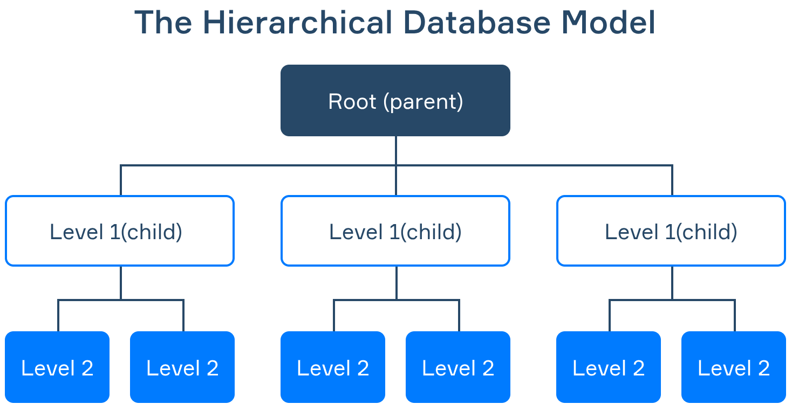
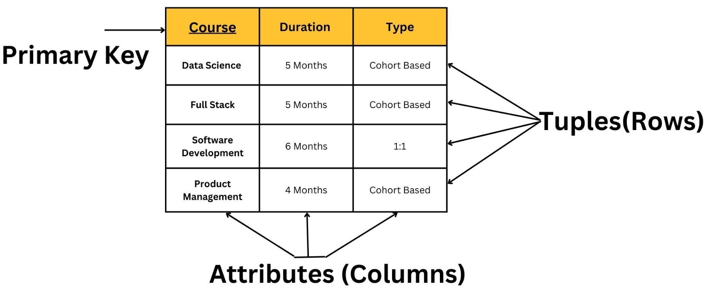

Data modeling and Data mining
What Is a Data Model?
- A data model is a conceptual representation of data that defines the structure, relationships, and constraints of data elements within a system or organization. It serves as a blueprint for how data is organized and stored, allowing for efficient data management, retrieval, and analysis.
- Data models are visual representations of an enterprise’s data elements and the connections between them. By helping to define and structure data in the context of relevant business processes, models support the development of effective information systems. They enable business and technical resources to collaboratively decide how data will be stored, accessed, shared, updated and leveraged across an organization.
What is the purpose of a data model?
Data models play a key role in bringing together all segments of an enterprise – IT, business analysts, management and others – to cooperatively design information systems (and the databases they rely on). These systems require properly defined and formatted data, and models shine a clear light on what data is required and how it must be structured to support the desired business processes. By explicitly determining the structure of your data, these models support a variety of use cases, including database modeling, information system design, and process development in support of a consistent, clean exchange of data. It’s also important to understand the three different types of data models. Each will serve a different purpose as you work through the data modeling process. The purposes of a data model are as follows:
- Structural Clarity: It provides a clear and organized structure for data, defining how data entities (e.g., customers, products) are related to each other and how attributes (e.g., names, IDs) are organized.
- Data Integrity: Data models enforce constraints and rules that ensure data accuracy and consistency. This helps in preventing data anomalies and errors.
- Data Management: Data models assist in data storage, retrieval, and management. They define how data is stored in databases, making it easier to work with data efficiently.
- Communication: Data models act as a common language between business stakeholders, analysts, and developers, facilitating clear communication about data requirements and structures.
- Analysis and Reporting: They enable data analysts and scientists to perform complex queries, analytics, and reporting, as they understand how data is organized.
- Database Design: Data models are used in the design of databases and data warehouses, helping in the creation of tables, indexes, and relationships.
Types of data models
There are several types of data models, including:
- Conceptual Data Model: This provides a high-level (big-picture view), abstract view of the data in an organization, focusing on entities and their relationships without delving into technical details.
- Logical Data Model: It defines data structures in a more detailed manner, including entities, attributes, and their relationships. It is technology-independent and focuses on what needs to be stored.
- Physical Data Model: They provide a schema for how the data will be physically stored within a database. As such, they’re the least abstract of all. They offer a finalized design that can be implemented as a relational database, including associative tables that illustrate the relationships among entities as well as the primary keys and foreign keys that will be used to maintain those relationships. Physical data models can include database management system (DBMS)-specific properties, including performance tuning.
- Hierarchical Data Model: It organizes data in a tree-like structure with parent-child relationships, where each parent can have multiple children but each child can have only one parent. 
- Network Data Model: It extends the hierarchical model by allowing multiple relationships between records, providing more flexibility. Instead of only allowing each child to have one parent, this model allows each child to have multiple parents (it calls the children members and the parents owners). It addresses the need to model more complex relationships such as the orders/parts many-to-many relationship mentioned in the hierarchical article. In following figure, A1 has two members, B1 and B2. B1. is the owner of C1, C2, C3 and C4. However, in this model, C4 has two owners, B1 and B2.
- Relational Data Model: It represents data as tables with rows and columns, where each table has a primary key and can be related to other tables through foreign keys. It's the foundation for relational databases like MySQL and PostgreSQL. 
- Entity-Relationship Model (ERD): Entity relationship diagram describes the structure of the database. The entity relationship diagram shows entities (tables in relational databases) and relationships between tables that exist in the database. For a good database design, it is very important to have an entity relationship diagram. In an entity relationship diagram, the basic elements are:
- Entities (tables)
- Attributes (table columns)
- Relationships (relationships between tables)


Image description: This image showcases my data modeling work at Luna data modeler. In this project, I created a comprehensive school data model, encompassing various critical elements such as class data, staff members, staff salaries, school details, addresses, parent information, student profiles, and subject details. This model serves as the foundation for organizing and managing crucial data related to the school environment. If you believe additional information would be beneficial, please feel free to suggest any specific details you'd like me to include.
Data Modeling Tools
- Luna modeler: Luna is a data modeling tool that is specifically designed for relational databases. It is a desktop application that is available for Windows, macOS, and Linux.
- ER/Studio: ER/Studio is a powerful data modeling tool that supports a variety of data models, including relational, hierarchical, network, and graph data models. ER/Studio also provides a variety of features to help you with data modeling, such as automatic entity discovery, reverse engineering, forward engineering, and validation.
- DbSchema Pro: DbSchema Pro is a free and open-source data modeling tool that is easy to use and supports a variety of database platforms. DbSchema Pro provides a variety of features to help you with data modeling, such as visual data modeling, schema synchronization, and database reporting.
- Erwin Data Modeler: Erwin Data Modeler is a popular data modeling tool that is known for its ease of use and powerful features. Erwin Data Modeler supports a variety of data models, including relational, hierarchical, network, and graph data models. Erwin Data Modeler also provides a variety of features to help you with data modeling, such as automatic entity discovery, reverse engineering, forward engineering, and validation.
- Archi: Archi is a data modeling tool that is specifically designed for enterprise architects. Archi supports a variety of data models, including relational, hierarchical, network, and graph data models. Archi also provides a variety of features to help you with data modeling, such as business process modeling, enterprise architecture modeling, and impact analysis.
- SQL Database Modeler: SQL Database Modeler is a free and open-source data modeling tool that is designed to help you create, edit, and document database models. SQL Database Modeler supports a variety of database platforms and provides a variety of features to help you with data modeling, such as visual data modeling, schema synchronization, and database reporting.
- Lucidchart: Lucidchart is a popular online diagramming tool that can also be used for data modeling. Lucidchart provides a variety of data modeling templates and symbols, as well as a variety of features to help you with data modeling, such as collaboration and real-time editing.
- PgModeler: PgModeler is a free and open-source data modeling tool that is specifically designed for PostgreSQL databases. PgModeler provides a variety of features to help you with data modeling, such as visual data modeling, schema synchronization, and database reporting.
- IBM InfoSphere Data Architect: IBM InfoSphere Data Architect is a powerful data modeling tool that is designed for enterprise businesses. IBM InfoSphere Data Architect supports a variety of data models, including relational, hierarchical, network, and graph data models. IBM InfoSphere Data Architect also provides a variety of features to help you with data modeling, such as automatic entity discovery, reverse engineering, forward engineering, and validation.
Benefits of data modeling
Data modeling makes it easier for developers, data architects, business analysts, and other stakeholders to view and understand relationships among the data in a database or data warehouse. In addition, it can:
- Reduce errors in software and database development.
- Increase consistency in documentation and system design across the enterprise.
- Improve application and database performance.
- Ease data mapping throughout the organization.
- Improve communication between developers and business intelligence teams.
- Ease and speed the process of database design at the conceptual, logical and physical levels.
Data modeling process
The data modeling process involves designing and creating a conceptual representation of how data should be organized, structured, and stored in a database system. It typically consists of the following steps:
- Identify Requirements: Understand the requirements of the system or application for which the data model is being developed. This involves gathering information from stakeholders, business analysts, and subject matter experts to determine the entities, attributes, relationships, and constraints that need to be represented.
- Conceptual Data Model: Create a conceptual data model that represents the high-level entities, their attributes, and the relationships between them. The conceptual model focuses on the business or domain concepts and provides an abstract view of the data requirements. Common techniques for creating conceptual models include entity-relationship (ER) diagrams or object-oriented models.
- Normalize the Model (Optional):If working with a relational database, the conceptual model can be normalized to eliminate redundancies and improve data integrity. This step involves applying normalization rules to ensure data is organized efficiently and avoid data anomalies. Normalization involves decomposing entities and defining primary keys, foreign keys, and relationships.
- Logical Data Model: Transform the conceptual model into a logical data model. The logical model represents the data structures and relationships using a specific notation or language. For relational databases, this often involves creating tables, defining columns, specifying data types, and establishing relationships using primary and foreign keys. In other database models, such as document-oriented or graph databases, the logical model may have different representations.
- Validate and Refine: Review and validate the logical data model to ensure it accurately represents the requirements. Collaborate with stakeholders to verify the model's correctness and completeness. Make refinements and adjustments as necessary to address any inconsistencies or issues identified during the validation process.
- Physical Data Model: Convert the logical data model into a physical data model that considers the specific database management system (DBMS) being used. This step involves translating the logical model into the technical implementation details, including specific database structures, indexes, storage considerations, and optimization techniques. The physical data model reflects the technical specifications required for data storage and retrieval.
- Implement and Deploy: Once the physical data model is finalized, it serves as the blueprint for implementing the database schema in the chosen DBMS. Create the necessary database objects (tables, indexes, views, etc.) based on the physical model. Load the data into the database and ensure that it aligns with the defined model.
Data mining
- Data mining is the process of extracting useful information from a collection of data, often from a data warehouse or a set of related data sets. Data mining relies on effective data collection, warehousing, and computer processing.
- Data mining combines statistics, artificial intelligence and machine learning to find patterns, relationships and anomalies in large data sets.
- Data mining is a collection of technologies, processes and analytical approaches brought together to discover insights in business data that can be used to make better decisions. It combines statistics, artificial intelligence and machine learning to find patterns, relationships and anomalies in large data sets.
- An organization can mine its data to improve many aspects of its business, though the technique is particularly useful for improving sales and customer relations.
- Data mining can be used to find relationships and patterns in current data and then apply those to new data to predict future trends or detect anomalies, such as fraud.
- Often, the analysis is performed by a data scientist, but new software tools make it possible for others to perform some data mining techniques.
Application of data mining
Data mining is a vital practice in today's data-driven world. It plays a crucial role in extracting valuable insights, patterns, and knowledge from large datasets. Here's why the need for data mining is so significant:
- Knowledge Discovery: Data mining helps uncover hidden patterns and relationships within data, enabling organizations to gain valuable insights and make informed decisions.
- Business Intelligence: It assists in turning raw data into actionable information, facilitating better business strategies and improving decision-making processes.
- Predictive Analytics: Data mining allows organizations to predict future trends and outcomes, helping them proactively plan and adapt to changes.
- Fraud Detection: It aids in identifying unusual or fraudulent activities by analyzing patterns and anomalies in financial and transaction data.
- Customer relationship management (CRM): Data mining helps businesses understand their customers better, enabling targeted marketing, personalized recommendations, and improved customer service.
- Healthcare: In the medical field, data mining is used to discover patterns in patient data, aiding in disease diagnosis, treatment recommendations, and epidemiological studies.
- Scientific Research: Researchers use data mining to analyze complex datasets, leading to new discoveries and advancements in various fields, from astrophysics to genomics.
- Risk Management: Financial institutions and insurance companies use data mining to assess and manage risks, such as credit scoring and insurance underwriting.
- Supply Chain Optimization: Data mining improves supply chain efficiency by analyzing data related to inventory, logistics, and demand forecasting.
- Competitive Advantage: Organizations that leverage data mining gain a competitive edge by making data-driven decisions, reducing costs, and increasing revenue.
In a world inundated with data, data mining is an invaluable tool for making sense of the information overload and harnessing its potential for growth, efficiency, and innovation.
Advantages of Data Mining
Data mining can deliver big benefits to companies by discovering patterns and relationships in data the company already collects and by combining that data with external sources. Here are just a few of the potential advantages data mining can bring to a business. The results of data mining are often demonstrated in dashboards within business software, which aggregates metrics and key performance indicators and displays them with simple-to-understand visuals.
The data modeling process is fundamental to creating well-structured, efficient, and adaptable databases, making it an essential component in data management and database development.
How Data Mining Works?
Data mining leverages predictive modeling to uncover patterns and insights from large datasets. Data mining involves several steps to extract meaningful insights from data. Here is a step-by-step overview of the typical data mining process:
- Step-1 (Problem Definition): Clearly define the problem or objective that you want to address through data mining. Identify the specific questions you want to answer or the goals you want to achieve.
- Step-2 (Data Collection):
Gather relevant data from various sources. This may include structured data from
- databases,
- spreadsheets, or logs,
- as well as unstructured data from text documents, social media, or web pages.
- Step-3 (Data preparation): The next step in data mining is to prepare the data for analysis. This involves cleaning (missing values, outliers, and inconsistencies), transforming, and selecting the data to ensure it is accurate, consistent, and relevant to the analysis.
- Step-4 (Exploratory data analysis (EDA)): EDA is the process of understanding the data by summarizing, visualizing, and exploring it. This helps to identify patterns, trends, and anomalies in the data.
- Step-5 (Feature engineering): Feature engineering is the process of creating new features from existing data. This can involve transforming, aggregating, and combining existing features to create more powerful and informative features.
- Step-6 (Model selection): The next step is to select the appropriate data mining algorithm for the problem. There are a variety of algorithms available, each
with its strengths and weaknesses. Common techniques include:
- Classification,
- Regression,
- clustering,
- assoication rule mining, and anomaly detection.
Selecting the right model depends on the specific goals and characteristics of the problem.
- Step-7 (Model training): The data mining algorithm is then trained on the prepared data. This involves setting model parameters and fitting the algorithm to the data.
- Step-8 (Model evaluation): The trained model is then evaluated on a separate dataset to assess its performance. This helps to ensure that the model is accurate and reliable.
- Step-9 (Deployment): The final step is to deploy the model in production. This involves integrating the model into the decision-making process or other applications.
Data mining techniques
Data mining techniques are used to extract valuable patterns, insights, and knowledge from large datasets. Here are some commonly used data mining techniques:
-
Classification:
Classification is a supervised learning technique that assigns predefined class labels to data instances based on their feature values. It involves training a classification model using labeled training data and then using the model to classify new, unlabeled data. Classification is used for tasks such as spam email detection, sentiment analysis, and customer churn prediction.
-
Regression:
Regression is also a supervised learning technique that predicts a continuous numerical value rather than a class label. It models the relationship between independent variables (features) and a dependent variable (target) to make predictions. Regression analysis is used in sales forecasting, demand prediction, and price optimization.
-
Clustering:
Clustering is an unsupervised learning technique that groups similar data instances together based on their intrinsic characteristics or patterns. It aims to discover inherent structures or clusters within the data. Clustering is used for customer segmentation, anomaly detection, and image recognition.
-
Association Rule Mining:
Association rule mining identifies relationships and associations between different items or variables in a dataset. It discovers patterns that indicate co-occurrence or dependency between items. Association rule mining is widely used in market basket analysis, recommendation systems, and customer behavior analysis.
-
Anomaly Detection:
Anomaly detection focuses on identifying data instances that deviate significantly from the expected or normal behavior. It helps in detecting unusual patterns or outliers that might be indicative of fraud, errors, or anomalies in the data. Anomaly detection is used in network intrusion detection, fraud detection, and quality control.
-
Text Mining:
Text mining techniques are used to extract valuable information and insights from textual data sources. This includes techniques for text classification, sentiment analysis, topic modeling, and information extraction from unstructured text data such as documents, social media posts, and customer reviews.
-
Time Series Analysis:
Time series analysis deals with data that is collected over a sequence of time intervals. It involves analyzing and forecasting patterns and trends in the data, taking into account the temporal dependencies. Time series analysis is used for predicting stock prices, demand forecasting, and weather forecasting.
-
Neural Networks:
Neural networks, inspired by the structure of the human brain, are powerful machine learning models capable of learning complex patterns and relationships in data. They consist of interconnected layers of nodes (neurons) that process and transform the data. Neural networks are used in image recognition, natural language processing, and pattern recognition tasks.
Data mining software
Categories of data mining softwares:
The following are some of the most popular data mining tools available in the market today. These includs:
- Open-source data mining software: is available for free and can be modified and redistributed by anyone. This type of software is often developed by a community of volunteers and is typically more flexible and customizable than commercial software. Some popular open-source data mining software options include:
- WEKA: WEKA is a free and open-source data mining software that is written in Java. It is a popular choice for academics and researchers.
- Apache Mahout: Apache Mahout is a free and open-source data mining software that is written in Scala and Hadoop. It is a good choice for businesses that use Hadoop.
- Orange: Orange is a free and open-source data mining software that is written in Python. It is a good choice for beginners
- DataMelt: DataMelt is a free and open-source data mining software that is written in Java. It is a powerful tool that can be used for a variety of tasks, including data mining, statistics, and scientific visualization.
- Commercial data mining software: is licensed for a fee and is typically developed by a company. This type of software is often more user-friendly and has more features than open-source software. Some popular commercial data mining software options include:
- RapidMiner: RapidMiner is a comprehensive data science platform that supports a wide range of data mining tasks, including classification, regression, clustering, and association rule mining. It has a user-friendly drag-and-drop interface and a large community of users.
- KNIME: KNIME (Konstanz Information Miner) is another open-source data analytics and mining platform. It offers a drag-and-drop interface for building data workflows and supports a wide range of data preprocessing, modeling, and evaluation techniques. KNIME also provides integration with various data sources and allows the use of custom algorithms.
- SAS Enterprise Miner: SAS Enterprise Miner is a commercial data mining software that is part of the SAS Analytics Suite. It is a powerful and versatile tool that is used by many businesses.
- IBM SPSS Modeler: IBM SPSS Modeler is also a commercial data mining software that is part of the IBM SPSS Statistics suite. It is a popular choice for businesses that use IBM products.
- Oracle Data Mining: Oracle Data Mining is a commercial data mining software that is part of the Oracle Database. It is a good choice for businesses that use Oracle databases.
- Cloud-based data mining software: is hosted and managed by a third-party provider and is accessed through a web browser. This type of software is typically more scalable and can be accessed from anywhere. Some popular cloud-based data mining software options include:
- MonkeyLearn: MonkeyLearn is a cloud-based data mining software that is easy to use and does not require any programming experience.
- H2O: H2O is a free and open-source data mining software that is written in Java and Python. It is a good choice for businesses that use Python
-
In addition to these three main categories, there are a few other types of data mining software:
- Academic data mining software is typically developed for research purposes and may not be as user-friendly or feature-rich as commercial software
- Specialized data mining software is designed for specific data mining tasks, such as text mining or time series analysis.
- Enterprise data mining software is designed for large organizations and may have features that are not available in other types of software, such as data integration and reporting.
Some other interesting things to know:
- Visit my website on Query language.
- Visit my website on SQL.
- Visit my website on PostgreSQL.
- Visit my website on Slowly changing variables.
- Visit my website on SNowflake.
- Visit my website on SQL project in postgresql.
- Visit my website on Snowflake data streaming.